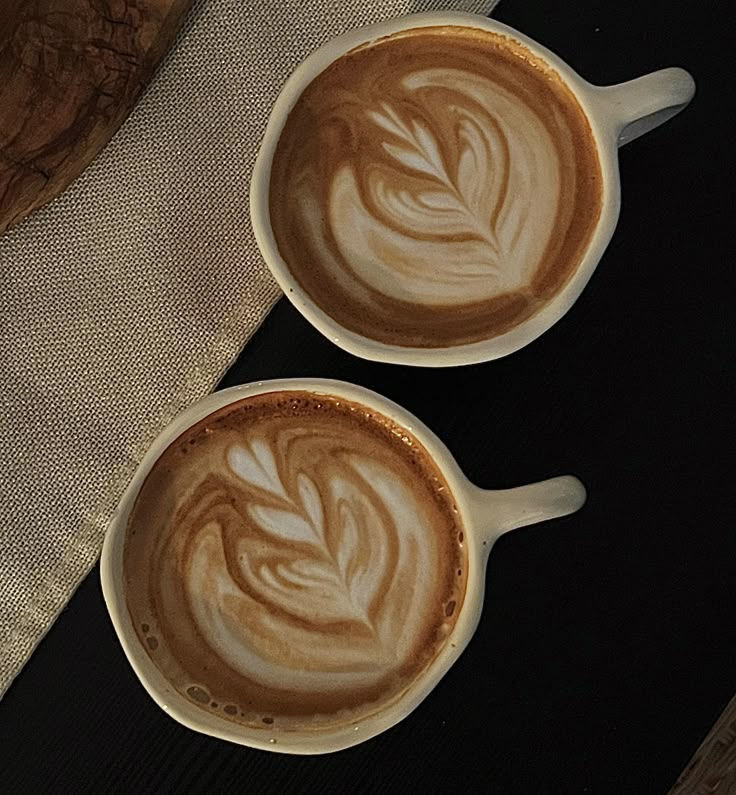
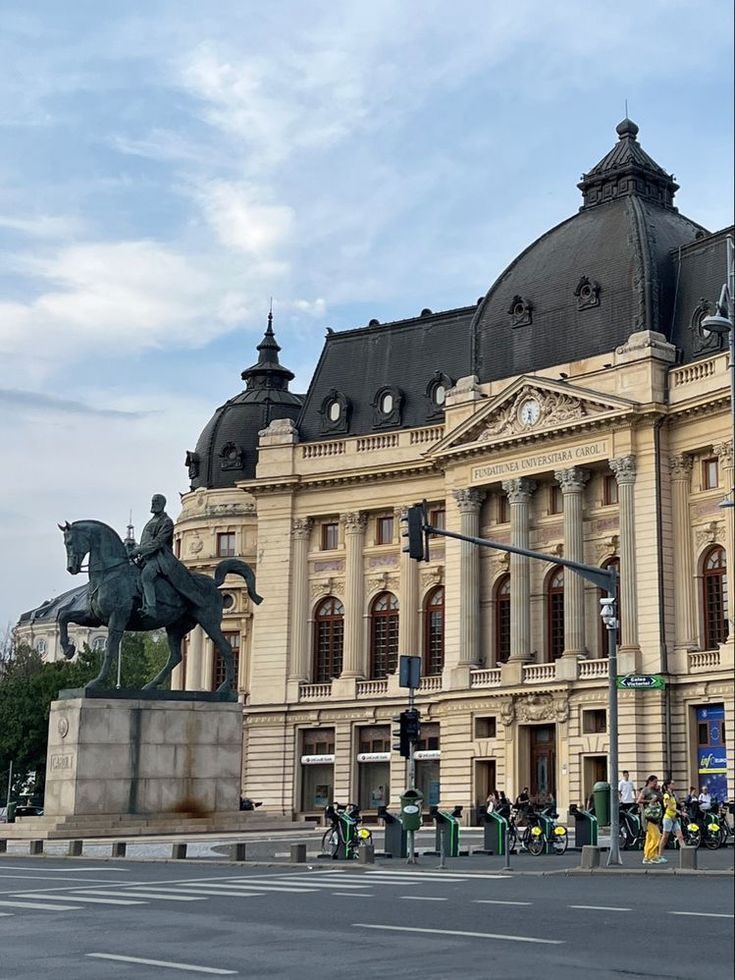
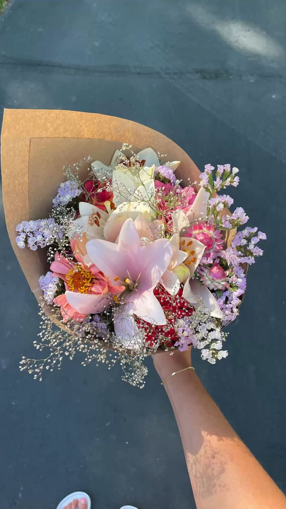
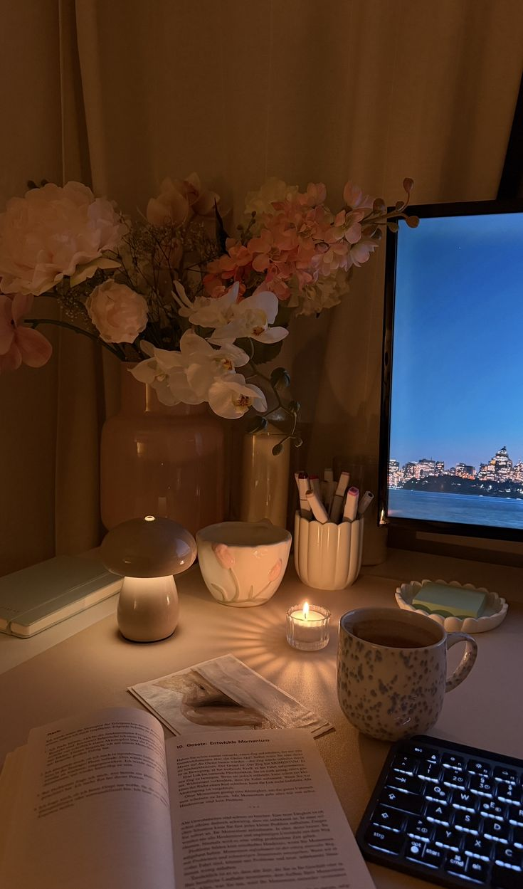
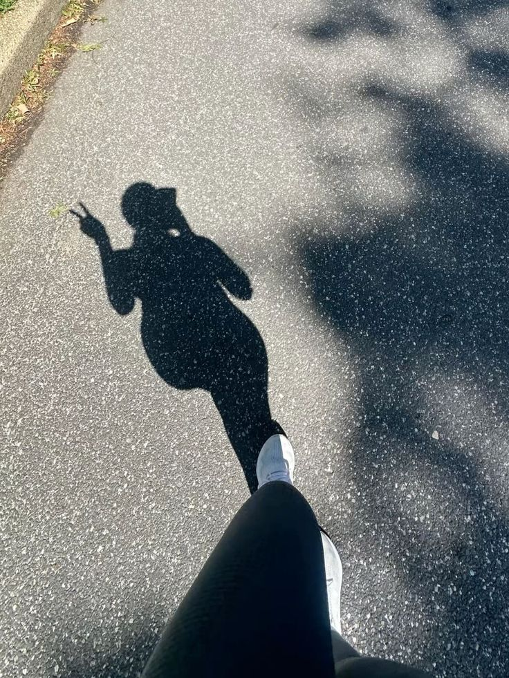
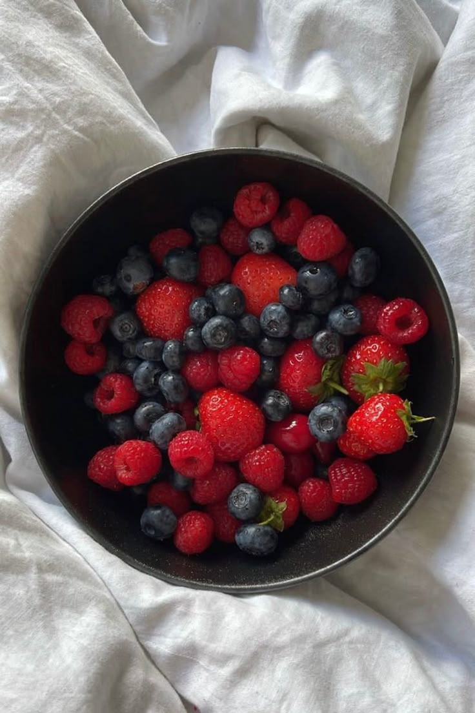
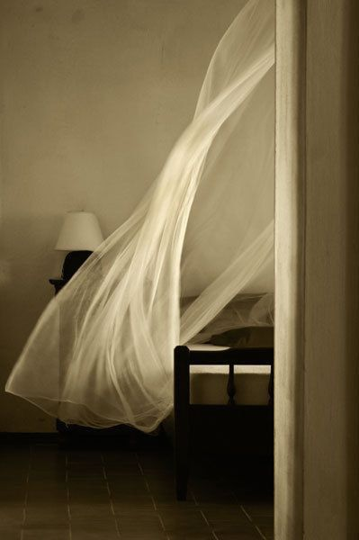
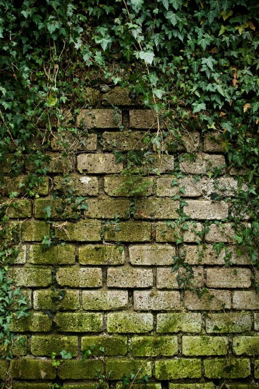
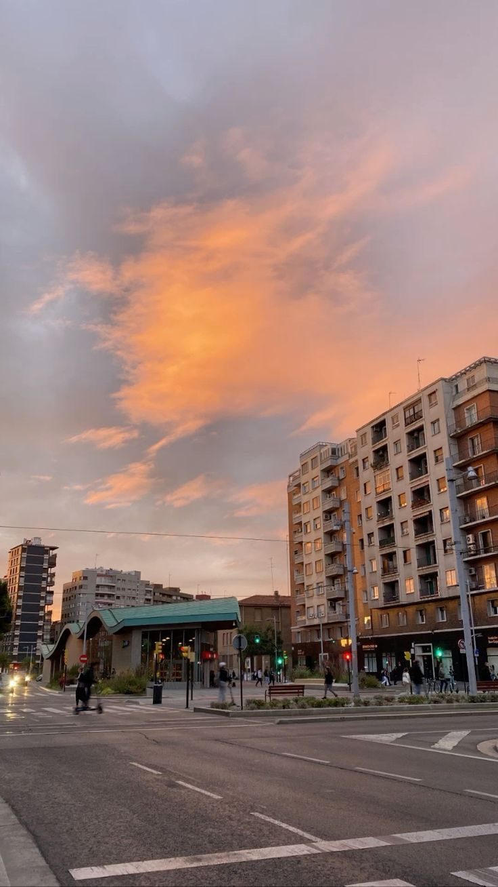

Tehnică: Ajustări cromatice (Curves) și Luminozitate.
Autor: Banariu Andra Paula

Tehnică: Corecție de perspectivă și Crop artistic.
Autor: Banariu Andra Paula

Tehnică: Instrumente de corecție (Spot Healing Brush).
Autor: Banariu Andra Paula

Tehnică: Filtre de culoare și Balans de Alb (White Balance).
Autor: Banu Celine Nicol

Tehnică: Manipulare grafică prin suprapuneri de straturi.
Autor: Banu Celine Nicol

Tehnică: Ajustări de saturație și contrast selectiv.
Autor: Banu Celine Nicol

Tehnică: Liquify pentru modelarea subtilă a formelor.
Autor: Bivol Alesia Giulia

Tehnică: Filtre de Sharpening și reducerea zgomotului digital.
Autor: Bivol Alesia Giulia

Tehnică: Color Grading și ajustări de expunere locală.
Autor: Bivol Alesia Giulia